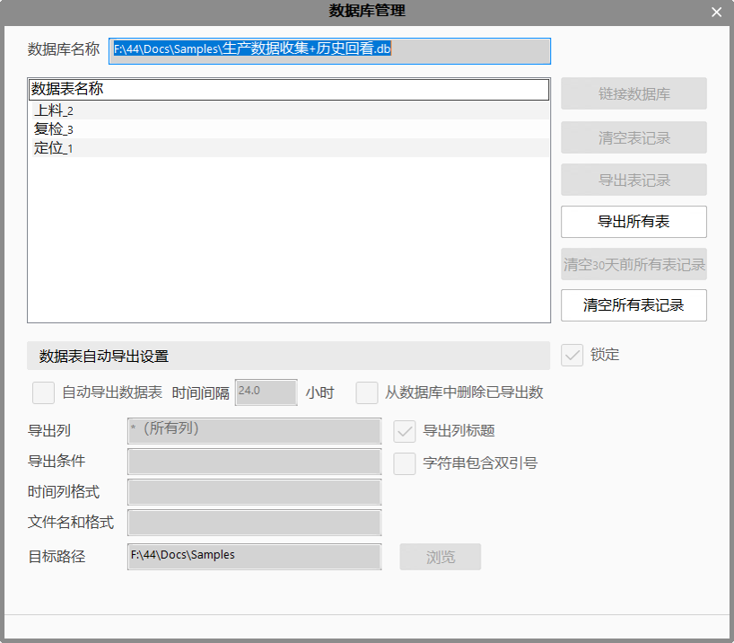
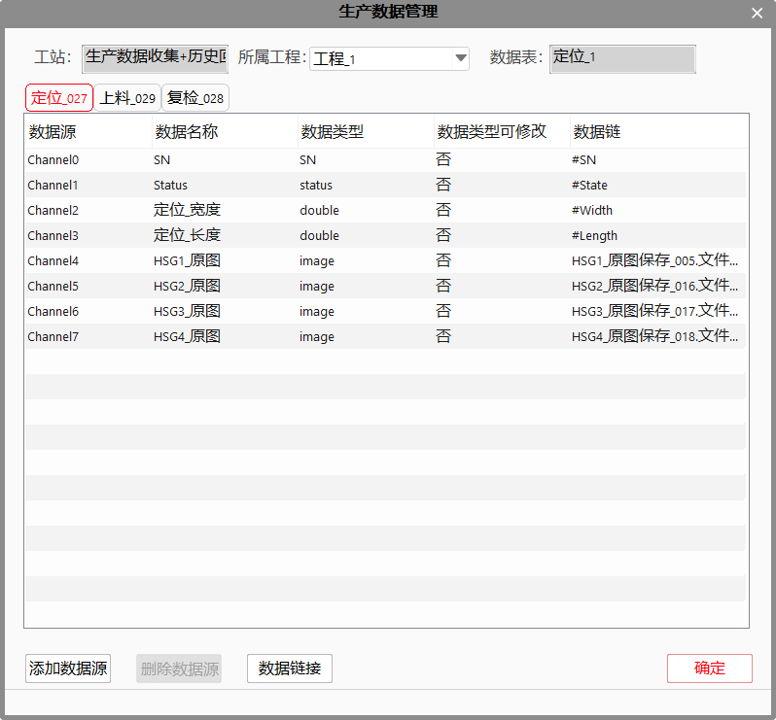

Công cụ thu thập dữ liệu sản xuất chủ yếu dùng để thu thập dữ liệu sản xuất và lưu dữ liệu đã thu thập vào cơ sở dữ liệu. Dữ liệu được lưu vào cơ sở dữ liệu một mặt có thể cung cấp cho giao diện xem lại lịch sử để thực hiện chức năng xem lại, mặt khác có thể cung cấp cho thống kê sản xuất để phân tích thống kê dữ liệu. Công cụ này có thể thu thập tổng cộng 13 loại dữ liệu cơ bản, gồm: double, int, bool, string, int64, char, float, long, short, wstring, unsigned char, unsigned long và unsigned short.
Để đáp ứng nhu cầu của chức năng xem lại lịch sử, bổ sung thêm ba loại dữ liệu tùy chỉnh: SN, status và image, trong đó kiểu dữ liệu cơ bản tương ứng lần lượt là string, bool và string. Trong đó SN biểu thị mã định danh duy nhất của sản phẩm hiện tại, status biểu thị trạng thái sản xuất hiện tại, image biểu thị đường dẫn đầy đủ của hình ảnh để thực hiện việc xem lại hình ảnh trong lịch sử.
| Phân loại | Tên tham số | Mô tả tham số |
|---|---|---|
| Cửa sổ thuộc tính | Không | Không |
| Cửa sổ hình ảnh | Không | Không |
| Chuỗi dữ liệu | Dữ liệu đầu vào | Nguồn dữ liệu được thiết lập trong giao diện quản lý dữ liệu sản xuất, tối đa có thể tồn tại 64 nguồn dữ liệu, mỗi nguồn tương đương với một cột trong bảng dữ liệu. Ngoài nguồn dữ liệu cố định SN và Status, các nguồn dữ liệu khác có thể được đổi tên và chỉnh sửa kiểu dữ liệu (khi thêm mới) trong giao diện quản lý dữ liệu sản xuất, và có thể thực hiện thao tác liên kết dữ liệu. |
| SN | Nguồn dữ liệu cố định, liên kết với mã SN của sản phẩm. | |
| Status | Nguồn dữ liệu cố định, liên kết với trạng thái sản xuất. | |
| Giao diện nâng cao | Không | Không |
| Phân loại | Tên tham số | Mô tả tham số |
|---|---|---|
| Cửa sổ giám sát | Tên bảng | Tên bảng dữ liệu trong cơ sở dữ liệu được liên kết. |
| Kết quả thực thi | Kết quả thực thi của công cụ. | |
| Thời gian thực thi | Thời gian thực thi của công cụ. | |
| Cửa sổ hình ảnh | Không | Không |
| Chuỗi dữ liệu | Tên bảng | Tên bảng dữ liệu trong cơ sở dữ liệu được liên kết. |
Không
Công cụ này cần sử dụng kết hợp với cơ sở dữ liệu. Để đạt được mục tiêu thu thập dữ liệu sản xuất, cần kết nối cơ sở dữ liệu trước, như hình 1 bên dưới cho thấy, giao diện quản lý cơ sở dữ liệu.
Nguồn dữ liệu của công cụ thu thập dữ liệu sản xuất cần được cấu hình thông qua giao diện “Quản lý dữ liệu sản xuất”, như hình 2 cho thấy, tại giao diện này có thể thêm hoặc xóa nguồn dữ liệu, đổi tên nguồn dữ liệu và chỉnh sửa kiểu dữ liệu, cũng có thể thực hiện liên kết dữ liệu;
Số lượng nguồn dữ liệu tối đa hỗ trợ là 64. Mỗi công cụ thu thập dữ liệu sản xuất tương ứng với một bảng dữ liệu trong cơ sở dữ liệu, nguồn dữ liệu của công cụ thu thập dữ liệu sản xuất tương đương với từng cột trong bảng, tên nguồn dữ liệu tương đương với tên cột, số lượng nguồn dữ liệu quyết định số lượng cột trong bảng.
Để phối hợp với chức năng xem lại lịch sử, công cụ này bắt buộc thêm cột SN và status vào bảng dữ liệu, nếu không cần thông tin này thì không cần liên kết dữ liệu cho các nguồn này; công cụ này mặc định thêm cột JobName để biểu thị tên tác vụ sản xuất hiện tại, cột này không cần liên kết dữ liệu thủ công, hệ thống sẽ tự động lấy từ dự án và ghi vào bảng dữ liệu.
Khi đã kết nối cơ sở dữ liệu, mỗi lần thêm một công cụ thu thập dữ liệu sẽ tạo ra một bảng mới trong cơ sở dữ liệu, tên bảng là duy nhất. Tên bảng hiện tại có dạng “TênCôngCụHiệnTại_MãĐịnhDanhDuyNhất”, trong đó mã định danh duy nhất do hệ thống tự động tạo để tránh trùng tên, tên công cụ hiện tại sẽ áp dụng cho cả khi đổi tên công cụ.
Nếu cần hỗ trợ hiển thị xem lại hình ảnh trong chức năng xem lại lịch sử, nguồn dữ liệu hình ảnh được thêm vào công cụ này phải chọn loại dữ liệu image, và liên kết dữ liệu là đường dẫn đầy đủ của hình ảnh được lưu (đầu ra “đường dẫn và tên tệp” của công cụ lưu ảnh hoặc công cụ chụp màn hình).


参见“\Samples\生产数据收集+历史回看.gvp”。